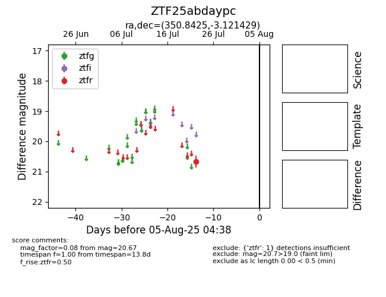

Target ZTF25abdaypc at 2025-08-05 04:38, see:
FINK: fink-portal.org/ZTF25abdaypc
Lasair: lasair-ztf.lsst.ac.uk/objects/ZTF25abdaypc
ALeRCE: alerce.online/object/ZTF25abdaypc
alt names
ZTF25abdaypc (ztf,fink)
coordinates:
equatorial (ra, dec) = (350.8425,-3.12143)
galactic (l, b) = (77.8795,-58.06936)
photometry
last ztfr=20.67
1 ztfr detections
